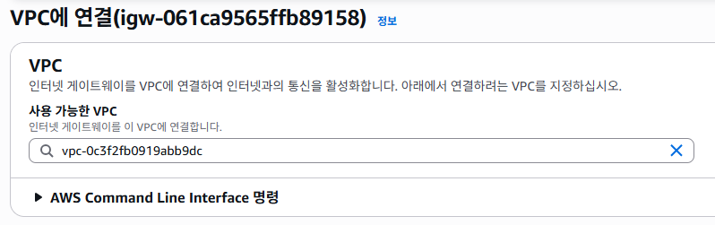
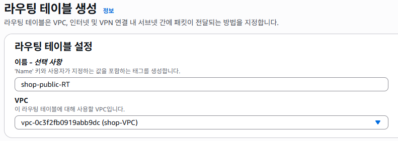
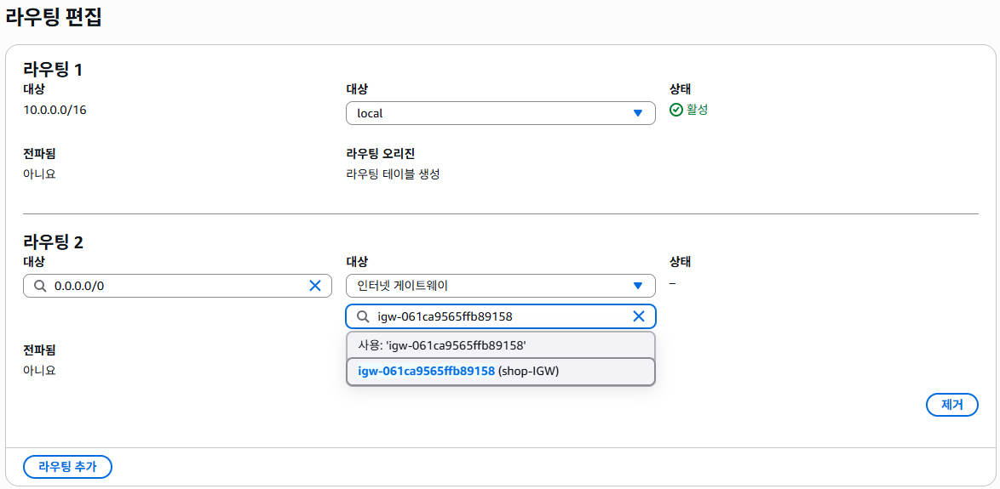
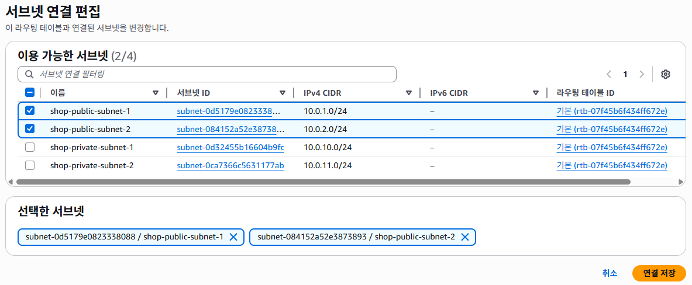
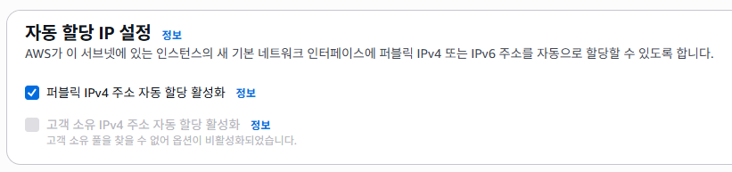

VPC 기초
학습 목표
- VPC의 개념과 필요성을 설명할 수 있다
- 서브넷, 라우팅 테이블, 인터넷 게이트웨이의 역할을 이해할 수 있다
- 퍼블릭 서브넷과 프라이빗 서브넷의 차이를 구분할 수 있다
- 커스텀 VPC를 생성하고 서브넷을 구성할 수 있다
VPC란?
VPC(Virtual Private Cloud)는 AWS 클라우드 내에서 나만의 격리된 가상 네트워크를 만드는 서비스입니다. EC2, RDS 등의 리소스를 VPC 안에 배치하고, 네트워크 통신 규칙을 직접 설계합니다.
AWS 클라우드 전체를 거대한 도시라고 생각해보세요.
VPC는 이 도시 안에 있는 하나의 아파트 단지입니다.
아파트 단지에는:
- 담장이 있어서 외부와 구분됩니다 (= VPC의 네트워크 격리)
- 여러 동(빌딩)이 있습니다 (= 서브넷)
- 정문이 있어서 외부와 연결됩니다 (= 인터넷 게이트웨이)
- 내부 도로가 있어서 동끼리 연결됩니다 (= 라우팅 테이블)
- 경비실이 출입을 관리합니다 (= 보안그룹, NACL)
각 아파트 단지(VPC)는 완전히 독립되어 있어서,
옆 단지의 주민이 우리 단지에 들어올 수 없습니다.
왜 VPC가 필요한가?
- 보안: 리소스를 격리하여 외부 접근을 통제
- 네트워크 설계: IP 대역, 서브넷 구조를 직접 설계
- 계층 분리: 웹 서버는 외부에 공개하고, DB는 내부에 숨기기
- 규정 준수: 네트워크 수준의 보안 요구사항 충족
AWS 계정을 만들면 각 리전에 기본 VPC(Default VPC)가 자동 생성됩니다.
Chapter 05~06에서 EC2를 만들 때 별도 설정 없이 사용한 것이 바로 이 기본 VPC입니다.
하지만 실무에서는 보안과 구조를 위해 커스텀 VPC를 직접 만들어 사용합니다.
이 챕터에서는 커스텀 VPC를 만들어보겠습니다.
서브넷이란?
서브넷(Subnet)은 VPC를 더 작은 네트워크 단위로 나눈 것입니다. 하나의 VPC 안에 여러 개의 서브넷을 만들 수 있습니다.
아파트 단지(VPC)에는 여러 동(101동, 102동, 103동...)이 있습니다.
서브넷은 각각의 동입니다.
- 101동, 102동 = 퍼블릭 서브넷: 정문(인터넷)과 직접 연결된 동. 택배 기사가 직접 올 수 있음
- 201동, 202동 = 프라이빗 서브넷: 경비실을 통해야만 접근 가능한 동. 외부인 출입 불가
서브넷의 핵심 규칙
- 각 서브넷은 하나의 가용 영역(AZ)에 위치합니다
- 하나의 가용 영역에 여러 서브넷을 만들 수 있습니다
- 서브넷끼리는 같은 VPC 안에서 자유롭게 통신할 수 있습니다
- 각 서브넷은 고유한 IP 대역(CIDR)을 가집니다
고가용성(High Availability)을 위해서입니다. 가용 영역 A에 장애가 발생해도, 가용 영역 B에서 서비스를 계속할 수 있습니다. AWS의 ALB(로드밸런서)와 RDS(다중 AZ)는 최소 2개의 가용 영역을 요구합니다.
퍼블릭 서브넷 vs 프라이빗 서브넷
서브넷 자체에 "퍼블릭/프라이빗" 설정 버튼이 있는 것은 아닙니다. 인터넷 게이트웨이로 가는 경로가 라우팅 테이블에 있는지에 따라 구분됩니다.
아파트 단지에서 어떤 동(101동)은 정문과 바로 도로가 연결되어 있어서
택배차가 직접 올 수 있습니다 (= 퍼블릭 서브넷).
반면 어떤 동(201동)은 정문과 직접 도로가 없어서
정문을 통해 직접 올 수 없습니다. 내부 도로로만 접근 가능합니다 (= 프라이빗 서브넷).
| 구분 | 퍼블릭 서브넷 | 프라이빗 서브넷 |
|---|---|---|
| 인터넷 접근 | 인터넷에서 직접 접근 가능 | 인터넷에서 직접 접근 불가 |
| 라우팅 테이블 | 인터넷 게이트웨이(IGW)로 가는 경로 있음 | IGW로 가는 경로 없음 |
| 퍼블릭 IP | 인스턴스에 퍼블릭 IP 부여 가능 | 퍼블릭 IP 필요 없음 |
| 배치할 리소스 | 웹 서버, ALB, NAT 게이트웨이 | DB, 내부 API, 캐시 |
| 보안 수준 | 외부 노출됨 (보안 강화 필요) | 외부에서 접근 불가 (보안 높음) |
데이터베이스(RDS)를 생각해보세요.
DB에는 사용자 정보, 주문 내역 등 중요한 데이터가 있습니다.
이 DB를 인터넷에 직접 노출하면 해킹 위험이 매우 높습니다.
그래서 DB는 프라이빗 서브넷에 놓고, API 서버(퍼블릭 서브넷)를 통해서만 접근하게 합니다.
마치 금고(DB)를 건물 지하(프라이빗)에 두고, 은행원(API)이 대신 출금해주는 것과 같습니다.
라우팅 테이블
라우팅 테이블(Route Table)은 네트워크 트래픽이 어디로 가야 하는지 알려주는 도로 표지판입니다. 각 서브넷은 하나의 라우팅 테이블과 연결됩니다.
고속도로에서 표지판을 보고 "서울 → 이쪽", "부산 → 저쪽"으로 가죠?
라우팅 테이블도 마찬가지입니다.
"VPC 내부(10.0.0.0/16) → 로컬(단지 내 도로)"
"그 외 모든 곳(0.0.0.0/0) → 인터넷 게이트웨이(정문)"
이 표지판이 있으면 인터넷으로 나갈 수 있고 (퍼블릭),
없으면 나갈 수 없습니다 (프라이빗).
퍼블릭 서브넷의 라우팅 테이블 예시
| 대상(Destination) | 타겟(Target) | 설명 |
|---|---|---|
10.0.0.0/16 |
local | VPC 내부 통신은 로컬로 |
0.0.0.0/0 |
igw-xxxxxx | 그 외 트래픽은 인터넷 게이트웨이로 |
프라이빗 서브넷의 라우팅 테이블 예시
| 대상(Destination) | 타겟(Target) | 설명 |
|---|---|---|
10.0.0.0/16 |
local | VPC 내부 통신만 가능 |
프라이빗 서브넷의 라우팅 테이블에는 0.0.0.0/0 경로가 없습니다.
따라서 인터넷으로 나갈 수 없고, 인터넷에서 들어올 수도 없습니다.
(인터넷 접근이 필요하면 NAT 게이트웨이를 사용합니다 - Chapter 09에서 다룸)
인터넷 게이트웨이 (Internet Gateway, IGW)
인터넷 게이트웨이는 VPC와 인터넷을 연결하는 출입구입니다. 이것이 없으면 VPC 안의 리소스는 인터넷과 통신할 수 없습니다.
아파트 단지에 정문이 없으면 외부와 완전히 차단되겠죠?
인터넷 게이트웨이는 이 정문입니다.
- 정문(IGW)이 있어야 택배(인터넷 트래픽)를 받을 수 있습니다
- 정문(IGW)이 있어야 주민(EC2)이 외출(인터넷 접속)할 수 있습니다
- 하나의 VPC에 하나의 IGW만 연결 가능합니다
인터넷 게이트웨이의 특징
- VPC당 하나만 연결 가능
- 수평 확장, 중복, 고가용성이 기본 제공
- 추가 비용 없음 (무료)
- 생성 후 VPC에 연결(Attach)해야 동작
CIDR 표기법
VPC와 서브넷을 만들 때 IP 주소 범위를 CIDR(Classless Inter-Domain Routing) 표기법으로 지정합니다. 처음에는 어렵게 느껴지지만, 기본만 알면 충분합니다.
우편번호 06000은 서울 강남구 전체를 의미하고,
06100은 강남구 역삼동을 의미합니다. 뒤에 숫자가 구체적일수록 범위가 좁아지죠.
CIDR도 비슷합니다:
10.0.0.0/16 = 10.0.으로 시작하는 모든 IP (65,536개) = "강남구 전체"
10.0.1.0/24 = 10.0.1.으로 시작하는 IP (256개) = "강남구 역삼동"
10.0.2.0/24 = 10.0.2.으로 시작하는 IP (256개) = "강남구 삼성동"
CIDR 읽는 법
10.0.0.0/16에서:
10.0.0.0= 시작 IP 주소/16= 네트워크 부분의 비트 수 (고정된 부분)- 숫자가 클수록 → IP 개수가 적어짐 (범위가 좁아짐)
- 숫자가 작을수록 → IP 개수가 많아짐 (범위가 넓어짐)
자주 사용하는 CIDR 블록
| CIDR | IP 개수 | 용도 |
|---|---|---|
/16 |
65,536개 | VPC (큰 범위) |
/20 |
4,096개 | 중간 크기 서브넷 |
/24 |
256개 | 일반적인 서브넷 (실습에서 사용) |
/28 |
16개 | 아주 작은 서브넷 |
VPC: 10.0.0.0/16 (65,536개 IP)
퍼블릭 서브넷 1: 10.0.1.0/24 (AZ-2a, 256개 IP)
퍼블릭 서브넷 2: 10.0.2.0/24 (AZ-2c, 256개 IP)
프라이빗 서브넷 1: 10.0.10.0/24 (AZ-2a, 256개 IP)
프라이빗 서브넷 2: 10.0.11.0/24 (AZ-2c, 256개 IP)
실습
리전이 서울(ap-northeast-2)인지 반드시 확인하세요. VPC는 리전 단위 리소스이므로 잘못된 리전에 만들면 나중에 문제가 됩니다.
-
VPC 대시보드 이동
AWS 콘솔 상단 검색바에 "VPC"를 입력하고 클릭합니다.
왼쪽 메뉴에서 "VPC"를 클릭하면 현재 VPC 목록이 표시됩니다.
기본 VPC(Default)는 그대로 두고 새로운 VPC를 만듭니다.
-
VPC 생성
"VPC 생성(Create VPC)" 버튼을 클릭합니다.
"VPC만(VPC only)"을 선택합니다.
다음과 같이 입력합니다:
- 이름 태그:
shop-VPC - IPv4 CIDR 블록:
10.0.0.0/16 - IPv6 CIDR 블록: 없음
- 테넌시: 기본값
"VPC 생성" 버튼을 클릭합니다.
- 이름 태그:
-
퍼블릭 서브넷 1 생성 (AZ-2a)
왼쪽 메뉴에서 "서브넷(Subnets)"을 클릭합니다.
"서브넷 생성(Create subnet)"을 클릭합니다.
- VPC:
shop-VPC선택 - 서브넷 이름:
shop-public-subnet-1 - 가용 영역:
ap-northeast-2a - IPv4 CIDR 블록:
10.0.1.0/24
마찬가지로 public-subnet-2, private-subnet-1, private-subnet-2를 생성합니다.
- public-subnet-2:
AZ-2c,10.0.2.0/24 - private-subnet-1:
AZ-2a,10.0.10.0/24 - private-subnet-2:
AZ-2c,10.0.11.0/24
- VPC:
-
인터넷 게이트웨이 생성
왼쪽 메뉴에서 "인터넷 게이트웨이(Internet gateways)"를 클릭합니다.
"인터넷 게이트웨이 생성(Create internet gateway)"을 클릭합니다.
- 이름 태그:
shop-IGW
"인터넷 게이트웨이 생성"을 클릭합니다.
- 이름 태그:
-
인터넷 게이트웨이를 VPC에 연결
생성 직후 상단에 "VPC에 연결(Attach to a VPC)" 버튼이 나타납니다. (또는 작업 메뉴에서 선택)
사용 가능한 VPC:
shop-VPC를 선택합니다."인터넷 게이트웨이 연결"을 클릭합니다.
상태가 "Attached"로 바뀌면 성공입니다.
-
퍼블릭 라우팅 테이블 생성
왼쪽 메뉴에서 "라우팅 테이블(Route tables)"을 클릭합니다.
"라우팅 테이블 생성(Create route table)"을 클릭합니다.
- 이름:
shop-public-RT - VPC:
shop-VPC선택
"라우팅 테이블 생성"을 클릭합니다.
 - 이름:
-
퍼블릭 라우팅 테이블에 인터넷 경로 추가
생성된
shop-public-RT를 선택합니다.아래 탭에서 "라우팅(Routes)" 탭을 클릭합니다.
"라우팅 편집(Edit routes)"을 클릭합니다.
"라우팅 추가(Add route)"를 클릭합니다:
- 대상(Destination):
0.0.0.0/0 - 타겟(Target): "인터넷 게이트웨이"를 선택하고
shop-IGW를 선택합니다
"변경 사항 저장(Save changes)"을 클릭합니다.
 - 대상(Destination):
-
퍼블릭 서브넷에 라우팅 테이블 연결
shop-public-RT를 선택한 상태에서 "서브넷 연결(Subnet associations)" 탭을 클릭합니다."서브넷 연결 편집(Edit subnet associations)"을 클릭합니다.
다음 2개의 서브넷에 체크합니다:
shop-public-subnet-1(10.0.1.0/24)shop-public-subnet-2(10.0.2.0/24)
"연결 저장(Save associations)"을 클릭합니다.
프라이빗 서브넷의 라우팅 테이블은?프라이빗 서브넷은 VPC 생성 시 자동으로 만들어진 기본 라우팅 테이블(Main)을 사용합니다. 기본 라우팅 테이블에는
10.0.0.0/16 → local경로만 있으므로 인터넷 접근이 불가능합니다. 즉, 자동으로 프라이빗 서브넷이 됩니다. -
퍼블릭 서브넷에 퍼블릭 IP 자동 할당 활성화
퍼블릭 서브넷에서 EC2를 생성할 때 자동으로 퍼블릭 IP를 받도록 설정합니다.
"서브넷(Subnets)"으로 돌아가서
shop-pblic-subnet-1을 선택합니다."작업(Actions) → 서브넷 설정 편집(Edit subnet settings)"을 클릭합니다.
"퍼블릭 IPv4 주소 자동 할당 활성화(Enable auto-assign public IPv4 address)"에 체크합니다.
"저장"을 클릭합니다.
shop-public-subnet-2에도 같은 설정을 합니다.
축하합니다! 다음과 같은 VPC 네트워크가 완성되었습니다:
다음 챕터(Chapter 09)에서는 이 VPC에 NAT 게이트웨이를 추가하고, 보안그룹과 NACL을 설정합니다. 그 다음 Chapter 10에서는 Chapter 05~06에서 기본 VPC에 배포한 ShopEasy를 이 커스텀 VPC로 이전합니다!